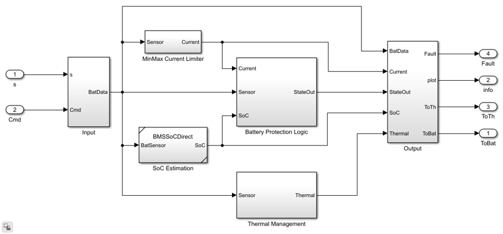

BMS
Battery management system with voltage, current, and thermal fault monitoring for the BEV high-voltage battery.
Model: BMS.slx
Parameters: BMSParams.m
Thermal Coupling: Yes (temperature monitoring and thermal fault limits)
Contents
Overview
The BMS monitors cell voltages, currents, and temperatures against configurable safety limits. It issues positive and negative relay commands, provides SOC estimation, and raises fault flags when operating limits are exceeded. Thermal monitoring includes coolant switch-on/off temperature thresholds for thermal management coordination.
open_system('BMS')

Ports
Inputs
- Cell voltage - Measured cell terminal voltage.
- Pack current - Measured pack current.
- Cell temperature - Measured cell temperature.
- Charge command - Requested charge/discharge mode.
Outputs
- Positive relay command - Connects battery positive terminal.
- Negative relay command - Connects battery negative terminal.
- SOC estimate - Estimated state of charge.
- Fault flags - Over-voltage, under-voltage, over-current, over-temperature.
- Coolant command - Thermal management enable based on temperature thresholds.
Workflows
The BMS is the core protection and monitoring subsystem used in all vehicle configurations that include a high-voltage battery. It is referenced by the BMS test harness (BMS/TestBench/BMSTestHarness.slx). Parameters are loaded by BMSParams.m.
Parameters
| Name | Default | Description |
|---|---|---|
| Min cell voltage limit | 3.0 V | Under-voltage fault threshold |
| Max cell voltage limit | 4.2 V | Over-voltage fault threshold |
| Max charging current | 100 A | Charging current protection limit |
| Max discharging current | 120 A | Discharging current protection limit |
| Charger CC value | 50 A | Constant-current charging setpoint |
| Min thermal limit | 233.15 K (-40 °C) | Low temperature fault threshold |
| Max thermal limit | 333.15 K (60 °C) | High temperature fault threshold |
| Series strings | 110 | Number of series-connected strings |
| Parallel cells per string | 3 | Cells in parallel per string |
| Coolant switch-on temperature | 320 K | Temp to activate coolant flow |
| Coolant switch-off temperature | 303 K | Temp to deactivate coolant flow |
See BMSParams.m for a complete list.